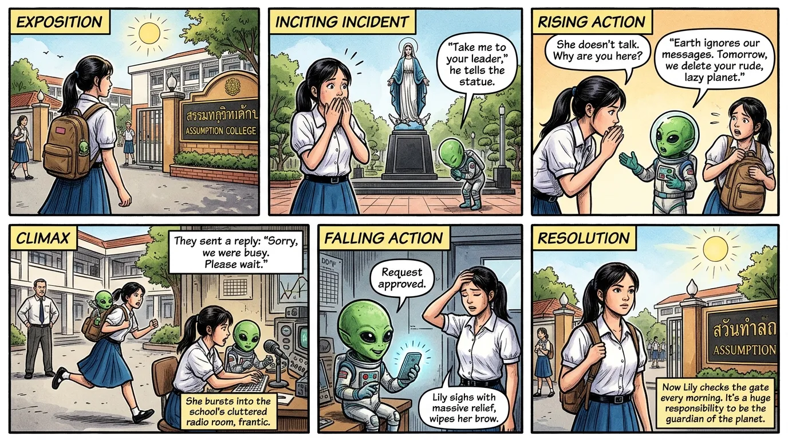
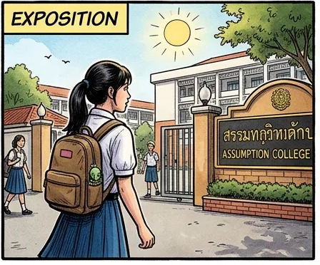
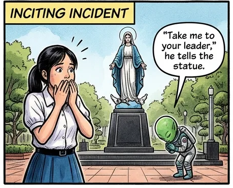
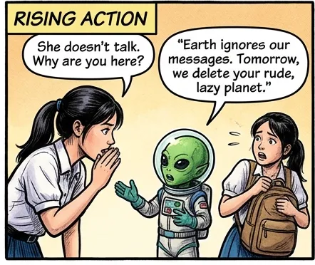
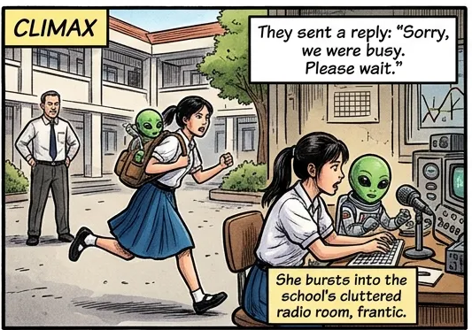
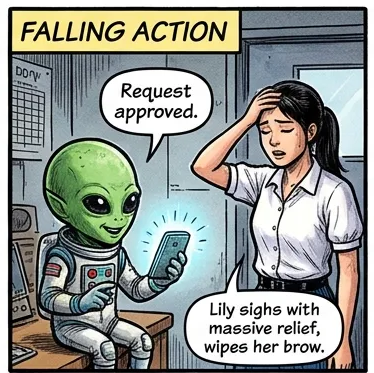
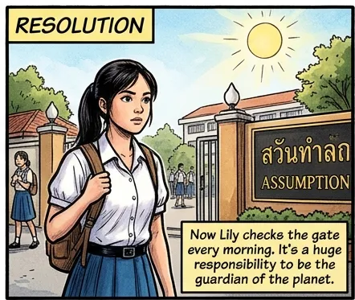

1
Learn how to structure a Part 2 response.
2
Write a response and receive fast feedback.
![A drawing of the gate of Assumption College Thonburi with its name in Thai and English on the sign. Two students in white school shirts, the boy in navy shorts and the girl in a navy skirt, stand in the foreground; the boy has dropped his phone and stares open-mouthed while the girl points at a small green alien. The alien, in a silver spacesuit, stands beside a glowing flying saucer on the left, one hand raised in greeting. Speech bubbles read WHIRRR ZAP, Greetings! and the Thai greeting sawasdee, and another reads a question mark and exclamation marks.](img/gate.png)
Write a story of about 100 words that starts with one sentence.
Learn how to structure a Part 2 response.
Write a response and receive fast feedback.
Your English teacher has asked you to write a story.
Your story must begin with this sentence.
Lily turned into the school gate and got the shock of her life.
Write your story.


You must write the first sentence that is supplied by the exam. Add some exposition in a single paragraph.
Example: “Lily turned into the school gate and got the shock of her life. There, in front of the Mother Mary statue, stood a little green extraterrestrial, the size of a football. He was bowing deeply.”

Introduces the thing that starts the trouble.

Each step makes the problem bigger, or brings it closer.

This is the moment the story has been building towards.

Shows what that moment has done to the character.

Closes the story by showing what is different now.
You have three minutes to plan your narrative arc.
Fear gripped Elle as she looked over at her friend Captain.
In your book
Write at least 100 words.
Copy the first sentence exactly as it is.
You will get full, graded feedback.